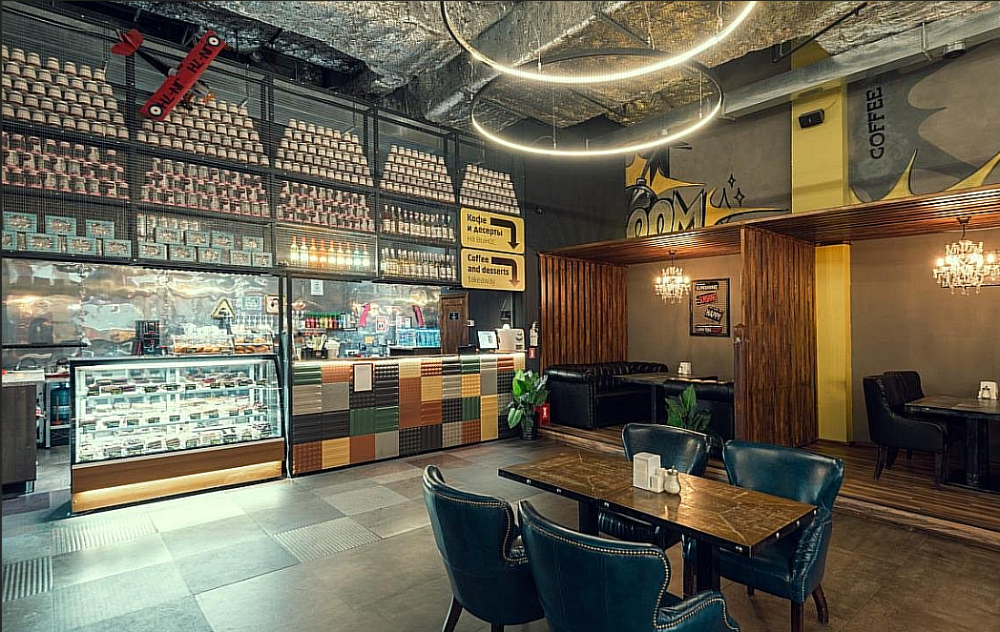

Наш подход к кофе
Кофейня Coffeeboom, расположенная в ТРЦ MEGA, — это не просто место для перекуса. Это настоящее пространство для отдыха после долгого шопинга. Мы используем только свежеобжаренные зерна 100% арабики, чтобы каждый глоток приносил вам радость. Наша команда бариста ежедневно настраивает помол и температуру, ведь идеальный эспрессо требует точности.
Особенность нашей точки — это панорамные окна и уютные кресла. Температура воды для заваривания всегда поддерживается на уровне 92°C. Мы открыты с 10:00 до 22:00. Приходите к нам, чтобы насладиться лучшими десертами в городе!
